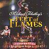

Celtic Lyrics Corner > Shows > Feet Of Flames
|  |
Feet Of Flames
(1998) |
| Tracks : |
1. High Priests
2. Dance Of Love 3. Carrickfergus 4. Duelling Violins 5. Whispering Wind 6. Dance Above The Rainbow 7. The Dawning 8. Spirit's Lament 9. I Dreamt I Dwelt 10. Strings Of Fire 11. Hell's Kitchen 12. Celtic Fire (Live) |